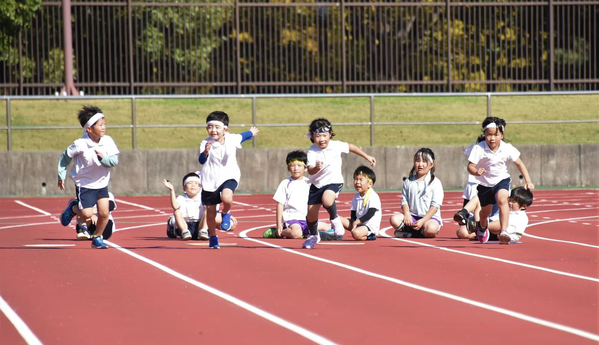
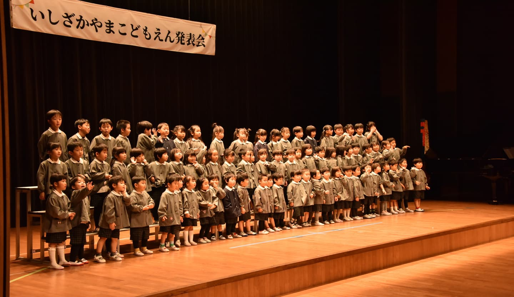
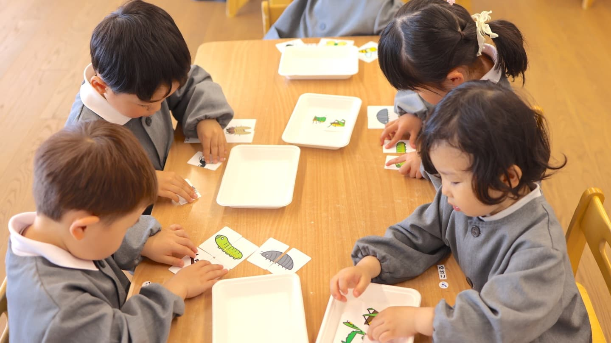

運動会
運動会は、半田運動公園の陸上競技場で開催。日頃の運動遊びの成果を発揮します。競技は、徒競走、玉入れ、綱引きなどの伝統的な競技をチームに分かれて、真剣勝負を繰り広げます。

運動会は、半田運動公園の陸上競技場で開催。日頃の運動遊びの成果を発揮します。競技は、徒競走、玉入れ、綱引きなどの伝統的な競技をチームに分かれて、真剣勝負を繰り広げます。

お寺の境内での夏まつり。みんなで踊りを踊ったり、先生たちの縁日でゲームを楽しみます。

大きなホールでの発表会。一年の成長を発表します。

幼児教室の開発した教材を用いて、就学前教育を行なっています。考える楽しさや数の概念など、小学校に向けての準備を行います。

マット運動、鉄棒、ボール遊びなど運動指導員による体操教室を行なっています。

音楽に合わせて体を動かして表現する楽しさを味わったり、楽器などに触れて、音感やリズム感を養います。

ケヅメリクガメ、ヘルマンリクガメ、ヒョウモンリクガメといったリクガメの飼育をしています。
また、園庭には、バッタやカエル、ダンゴムシなど生き物がたくさん。園舎内にもよくトンボや鳥が遊びにきます。